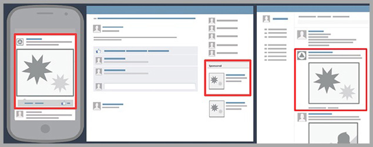
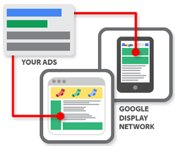
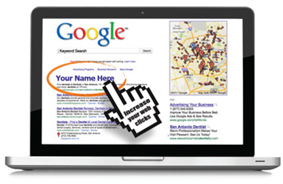
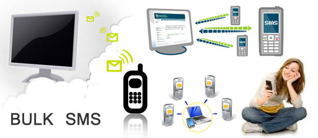
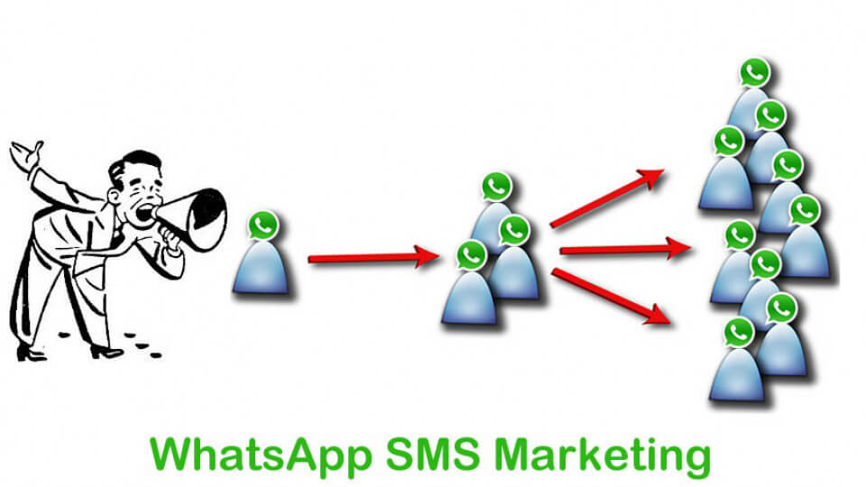

حملات اعلانية| خدمة ادارة الحملات الاعلانية المدفوعة:
التسويق الالكتروني العديد من الأدوات التسويقية وخاصة فى مجال
الحملات الاعلانية حيث أصبح بامكانك أن تحقق لمشروعك التجاري معدل انتشار سريع وشهره واسعة من خلال
الحملات الاعلانية المدفوعة على الانترنت, التى تعتبر من أهم أدوات
التسويق الالكتروني على الاطلاق من الآن لا تتحدث أنت عن مشروعك بل دعه هو يتحدث عن نفسه, دعه ينطلق ويصل لملايين العملاء سواء كانوا زوار أو مستخدمين لشبكة الانترنت, أصبح الان بامكانك توجيه رسالتك الاعلانية والتسويقية لعميلك المناسب بالوسيلة المناسبة وفى المكان المناسب وفى التوقيت المناسب تماما.
تعتبر
الحملات الاعلانية على الانترنت من أهم الادوات فى العصر الحديث لاشهار وانتشار ونجاح أى منتج أو خدمة أو أى شركة فما الجدوى من وجود منتج أو خدمةممتازة ويحتاج اليها الجميع لكن لا أحد يعلم عنها شيئا؟
الحملات الاعلانية عبارة عن اعلان واحد أو سلسلة من الإعلانات المختلفة فى واحده او أكثر من الوسائل أو
القنوات الإعلانية يجمعها كلها هدف واحد فقط وتستهدف شريحة محددة من الجمهور وتستمر لمدة زمنية معينة حسب هدف الشركة من
الحملة الاعلانية وغالبا ما يتم فيها توجيه الرسالة الاعلانية بشكل
<مكثف مع الاعتماد على تكرار الرسالة الاعلانية لتدعيم صورة المنتج أو الخدمة أو الشركة فى أذهان الجمهور وهو ما يطلق عليه فى التسويق (Branding).
توفر شركة البوابة الرقمية لخدمات التسويق الالكترونيى | Digital Gate لعملائها خدمة ادارة الحملات الاعلانية عن طريق فريق محترف متخصص بادارة الحملات الاعلانية لتحقيق أعلى عائد ممكن من الحملات الإعلانية وبأقل تكلفة ممكنة وبالتالي تحقيق أعلى معدل عائد على الاستثمار لعملائنا ولتوفير خدمات ادارة الحملات الاعلانية على جميع المنصات الاعلانية المختلفة التى يوفرها لنا التسويق الالكتروني مما يوفر لعملائنا التنوع والقدرة على اختيار أفضل المنصات الاعلانية التى تناسبهم وتناسب طبيعة نشاطهم. وتتنوع وتختلف الحملات الاعلانية التى نقدمها لعملائنا مما يعطى لهم تنوعا فريدا ومميزا والفرصة لاختيار أنواع الحملات الاعلانية التى تناسبهم فنوفر لهم مختلف أنواع ومنصات الحملات الاعلانية المستخدمة فى مجال التسويق الالكتروني بما يلائم احتياجاتهم وطبيعة المنتج أو الخدمة المقدمة وحسب الهدف من الحملة الاعلانية وحسب شرائح الجمهور المستهدفة إننا نوفر لهم فى مكان واحد ومن خلال بوابه واحدة كافة المنصات الاعلانية المتاحة والمستخدمة فى مجال التسويق الالكتروني مثل الحملات الإعلانية على مواقع التواصل الإجتماعي مثل إعلانات تويتر Twitter Ads, و اعلانات إنستاجرام Instagram Ads, و اعلانات الفيسبوك Facebook Ads, و اعلانات لينكد ان Linked In Ads أو الحملات الإعلانية للظهور فى نتائج البحث بمحركات البحث أو الحملات الإعلانية للبنر الدعائي GDN على المواقع الشهيرة أو حملات الفيديو الدعائى على اليوتيوب You Tube Ads أو حملات البريد الالكتروني الدعائي email Marketing أو حملات الرسائل النصية القصيرة SMS أو حملات رسائل الواتساب الدعائية Whats Bulk بالاضافة لتوفير موقع الكتروني متخصص يتيح لعملائنا ارسال الرسائل النصية القصيرة المجمعة Bulk SMS بأنفسهم.
وفيما يلى شرح مبسط لأهم أنواع الحملات الإعلانية التى نقدمها على الانترنت:
-
أولا: الحملات الإعلانية على مواقع التواصل الإجتماعي:
تعتمد الحملات الإعلانية على مواقع التواصل الإجتماعي على العدد الكبير من المستخدمين المشتركين في تلك الشبكات فى القيام بعمل حملات إعلانية للمعلنين. وقد تتم عملية الاستهداف بناء على التوزيع الديموغرافي أو للعديد من الشرووط الأخرى فنظرا لطبيعة البيانات التي تطلبها هذه الشبكات الاجتماعية من المستخدم عند التسجيل أو لطبيعة استخدامه لها فإن المعلن يكون قادرا على تحديد الفئة المستهدفة بدقة عالية لكى تكون مناسبة لطبيعة نشاطه فتظهر إعلاناته لهذه الفئة بالتحديد, وتتنوع وتتعدد أهداف الحملات الاعلانية على مواقع التواصل الاجتماعي وفقا لما يلى:
- حملات جذب متابعين جدد.
- حملات زيادة التفاعل على المنشورات.
- حملات جذب زوار للموقع الإلكتروني.
- حملات التسويق وزيادة نسبة الحضور لحدث أو مؤتمر أو معرض معين.
- حملات زيادة عدد مشاهدين فيديو معين.
- حملات الحصول على بيانات وعناوين وتليفونات للجمهور المهتم بمجال عملك.
 -
ثانيا: الحملات الإعلانية للظهور فى نتائج البحث:
تعتمد الحملات الإعلانية للظهور فى نتائج البحث بمحرك البحث جوجل (Google Search) على العدد الكبير من المستخدمين المتواجدين يوميا على محركات البحث ويقومون بملايين عمليات البحث يوميا للحصول على معلومات عن منتج أو خدمة أو شركة أو موقع ... الخ وذلك فى عمل ونشر حملات إعلانية للظهور فى نتائج البحث ويعتبر هذا النوع من أهم أنواع الحملات الإعلانية على الإطلاق وأهم ما يميز هذا النوع من الحملات الاعلانية هو أن المستخدم لديه بالفعل الحاجة والرغبه فى المنتج أو الخدمة ويبحث عنه بالفعل ويبحث بالفعل عن الشركة التى تقوم باشباع هذه الحاجه لديه ويعتبر الظهور للمستخدم فى هذه اللحظه مهما بالنسبه للكثير من الشركات حيث أن العميل غالبا ما يكون فى هذه اللحظة على وشك اتخاذ قرار الشراء. وقد تتم عملية الاستهداف فى هذا النوع بناء على التوزيع الديموغرافي ويتم التحكم فى اظهار الإعلان دول أو مدن أو مناطق بعينها.
 -
ثالثا: الحملات الإعلانية للظهور على المواقع الشهيرة (GDN):
تعتمد الحملات الإعلانية للظهور على المواقع الشهيرة أو حملات البنر الدعائى (GDN) على ظهور البنر الإعلانى للمعلن فى المواقع الشهيرة التى يرتادها الملايين من مستخدمى الإنترنت بشكل يومى ومستمر وتحقق عدد كبير جدا من الزوار مثل المواقع الالكترونية للجرائد الشهيرة أو الرسمية مثلا (جرائد الرياض والجزيره وعكاظ ... الخ على سبيل المثال) ويعتبر ظهور البنر الإعلانى للشركة فى هذه المواقع ذات الإقبال الشديد من الأدوات القوية فى نشر وإشهار الإسم التجارى والعلامه التجارية بين الجمهور وهو ما يطلق عليه فى علم التسويق (Branding).
ويلاحظ أنه من خلال هذا النوع من الحملات يمكن التحكم فى تحديد واختيار المواقع الإلكترونية التى يظهر عليها الإعلان ويتم التحكم أيضا فى الدول والمدن والمناطق التى يظهر لمستخدميها هذا الإعلان. -
رابعا: حملات الفيديو الدعائي على موقع اليوتيوب:
تعتمد حملات الفيديو الدعائي على موقع اليوتيوب (You Tube Ads) على ظهور الفيديو الإعلانى للمعلن فى بداية أو أثناء عرض مقاطع الفيديو للمستخدمين على القنوات فى اليوتيوب (YouTube) ويستخدم هذا النوع من الحملات الإعلانية وفقا لطبيعة المنتج أو الخدمة أو الجمهور المستهدف ويعتبر هذا النوع من الأدوات القوية فى نشر وإشهار المنتجات والخدمات والإسم التجارى والعلامه التجارية بين الجمهور وهو ما يطلق عليه فى علم التسويق (Branding).

-
خامسا: حملات البريد الالكتروني الدعائي (email Marketing):
تعد رسائل البريد الإلكتروني الدعائي من أشهر وأقوي وأفضل أدوات التسويق الالكتروني ومن مميزاتها:
- تمكنك من الحصول على عملاء جدد لشركتك وزياده عدد العملاء بالاضافة لعرض منتجاتك عليهم مما يؤدى الى زياده المبيعات المباشرة.
- تمكنك من استمرار التواصل مع عملائك الحاليين بارسال جميع التحديثات والمنتجات والخدمات الجديده اليهم.
- تعتبر طريقه اقتصادية وغير مكلفة لتنفيذ حملات الدعاية والاعلان حيث يمكن إرسال كتالوجات ملونه بجميع منتجات الشركه الى عملائك الحاليين أو إلى عملاء جدد وبذلك تتخلص من تكلفه طباعه وتوزيع تلك الكتالوجات.
- إشهار موقعك الالكتروني وزياده عدد زواره عن طريق ارسال الاف من رسائل البريد الالكتروني الدعائي الذى يتم ارساله شهريا الى عملاء جدد.
- سرعه تنفيذ الحملات الإعلانية حيث تسطيع عرض منتجاتك على الاف من العملاء فورا وفى نفس الوقت.

-
سادسا: حملات الرسائل النصية القصيرة (SMS):
الآن أصبح بامكانك الإستفادة من إنتشار ونمو تكنولوجيا الإتصالات في المملكة وذلك باستخدام التسويق الإلكتروني باستخدام الرسائل النصية القصيرة إلى الهاتف الجوال (SMS), والتى تعتبر من الوسائل الاقتصادية ومنخفضة التكلفة كما أنها تعتبر من الأدوات الفعالة جداً في التسويق الالكتروني, سوف نساعدكم أيضا في تسويق منتجاتكم وخدماتكم وتوصيل الرسالة التسويقية إلى عملائكم المستهدفين أو إلى عملائكم الحاليين باستخدام تقنيات التسويق عن طريق رسائل الجوال المجمعة (Bulk SMS).
إن خدمة ارسال رسائل الجوال أو الرسائل النصية القصيرة (SMS) من الإنترنت تعتبر من أسرع وسائل التواصل الفوري مع عملائكم ويمكنكم أيضا استخدامها مباشرة للتواصل مع عدد كبير من الناس دفعة واحدة حيث يمكنكم كتابة الرسالة على موقع الشركة الخاص برسائل الجوال ثم إرسالها إلى أرقام الجوال التي يتم تحديدها مهما كان عددها (رقم واحد أو آلاف أوحتى ملايين الأرقام) دفعة واحدة وبضغطة زر واحدة. -
سابعا: حملات رسائل الواتساب الدعائية (Whats Bulk):
يعتبر تطبيق الواتسآب من أكثر التطبيقات انتشارا واستخداما بشكل يومي حيث يستخدمة أكثر من 450 مليون مستخدم فى مختلف دول العالم ويتم تبادل اكثر من 35 بليون رسالة يوميا من خلاله, أصبح الآن يمكنكم الإستفاده من تقنية رسائل الواتساب الدعائية كوسيلة إعلانية قوية ومؤثرة للوصول إلى عملائكم الحاليين أو المرتقبين والتواصل معهم حيث أن حملات رسائل الواتساب الدعائية يمكن أن تستهدف شريحة كبيرة جدا وواسعة الإنتشار على مستوى العالم وليس فقط داخل المملكة.
تمكنكم خدمة رسائل الواتساب الدعائية من إرسال رسائل تسويقية متنوعة لعملائكم سواء كانت رسائل نصية طويلة تصل إلى 5000 حرف أو إرسال روابط لمواقع أو مقطوعات صوتية أو صور أو لقطات فيديو بطريقة سريعة ومضمونة تماما.مميزات خدمة رسائل الواتساب الدعائية:
- نظام إرسال جماعي لمستخدمي برنامج المحادثة (WhatsApp).
- السرعة والدقة فى عملية الإرسال.
- ضمان وصول الرسالة التسويقية لكافة المستقبلين بالكامل.
- إمكانية فرز الأرقام وعمل عملية فصل للأرقام التى لا يوجد لها حساب على الواتسآب قبل البدئ فى عملية الإرسال وإمكانية تحديد عدد الأرقام التى لها حساب بالفعل على الواتساب.
- إمكانية الإرسال إلى عدد غير محدود من الأرقام ويتم الارسال فى نفس الوقت.
- يتم الإرسال من خلال عدد كبير جدا من الأرقام المختلفة لتجنب قيام العميل بعمل حظر لرقم المرسل (Block) وبالتالى التأكد من وصول الرسالة التسويقية للعميل.

إبدأ الآن واجعل مشروعك التجاري ينطلق ويصل الى الملايين من شرائح عملائك المستهدفين.
مميزات الحملات الاعلانية المدفوعة الالكترونية:
- تعتبر الحملات الإعلانية المدفوعة الالكترونية من أقوى أساليب التسويق الالكتروني الحديثة حيث أصبح أكثر من 80% من العملاء يستخدمون الإنترنت بشكل يومى كما أن أكثر من 8% من عمليات البحث عن منتج أو خدمةعلى الإنترنت تنتهى فعلا بعملية الشراء.
- التحكم التام فى سرعة إنشاء وإطلاق وإيقاف الحملات الإعلانية وفقا للحاجة وتغيرات السوق.
- إرتفاع العائد على الإستثمار فى الحملات الإعلانية مقارنة بوسائل التسويق التقليدية الأخرى.
- إنخفاض تكلفة الحملات الاعلانية الالكترونية عن الحملات التسويقية التقليدية حيث يمكن تنفيذ حملات إعلانية بمبالغ زهيده مقارنة بحملات التسويق التقليدية الباهظة التكلفة وبالتالى وفرت الحملات الاعلانية الالكترونية للأفراد والشركات الصغيرة والمتوسطة القدرة على عمل الحملات الاعلانية ونشر منتجاتها وخدماتها وإشهار إسمها وعلامتها التجارية ومنافسة الشركات الكبيرة فى الحصول على قدر أكبر من الحصة السوقية وبتكلفة أقل فلم تعد الحملات الإعلانية والوصول للعملاء حكرا فقط على الشركات الكبيرة ذات الإستثمارات الباهظة.
- توفر أساليب الحملات الاعلانية الالكترونية القدرة على الإختيار والوصول لشرائح العملاء المستهدفة بدقة عالية وبالتالى إرتفاع العائد على الإستثمار.
- على عكس وسائل التسويق التقليدية فإن نتائج حملات التسويق الالكتروني قابلة للقياس بدقة شديدة ويمكن تحديد مردود كل حملة من حيث عدد الأشخاص الذين تفاعلوا مع الحملة ونوعهم وأعمارهم وأماكنهم وأنواع الأجهزة التى يستخدمونها وإهتماماتهم وأوقات تفاعلهم وغير ذلك من التقارير الدقيقة التى يوفرها التسويق الالكتروني عن شرائح العملاء ونتائج الحملات الاعلانية والتى توضح مدى وصول الرسالة التسويقية لشريحة العملاء المستهدفة وبدقة.
- التحكم الكامل فى الحملات الاعلانية المدفوعة الالكترونية من حيث توقيت بداية الحملة وتوقيت إنتهاء الحملة ومعدل ظهور الإعلانات وفى أى الأماكن تظهر والتحكم فى تكلفة الحملة إلى غير ذلك من المتغيرات.
- توفر قنوات الحملات الاعلانية الالكترونية المختلفة امكانية الوصول للشريحة المستهدفه من العملاء وإشهار الإسم والعلامة التجارية فى أى وقت وعلى مدار الساعة (24 ساعة يوميا و 7 ايام فى الأسبوع) وفى اى مكان سواء فى أعمالهم أو فى منازلهم أو حتى أثناء سفرهم وانتقالهم.
- الحملات الاعلانية الالكترونية تساعد الشركات على الإنتشار وتخطى الحواجز الجغرافية والمكانية فيمكنك بسهولة تسويق المنتجات والخدمات وإشهار الأسماء والعلامات التجارية والحصول على عملاء جدد فى مدن أخرى أو دول أخرى تبعد عنك آلاف الأميال ويساعد على تحقيق نمو وإنتشار سريع للأعمال.
- الحملات الاعلانية الالكترونية قد تكون موجهة لعملاء لديهم فعلا الحاجة للمنتج ويبحثون عنه وعن أماكن وجوده مثل الحملات الإعلانية خلال محركات البحث وبعضها يكون موجها لأفراد مهتمين فعلا بمجال عملك ووفقا لإختيارك لشرائح عملائك.
انتهز الفرصة ولا تتردد و اتصل الآن وادعم شركتك بادارة احترافية للحملات الاعلانية الالكترونية على الانترنت القوية.